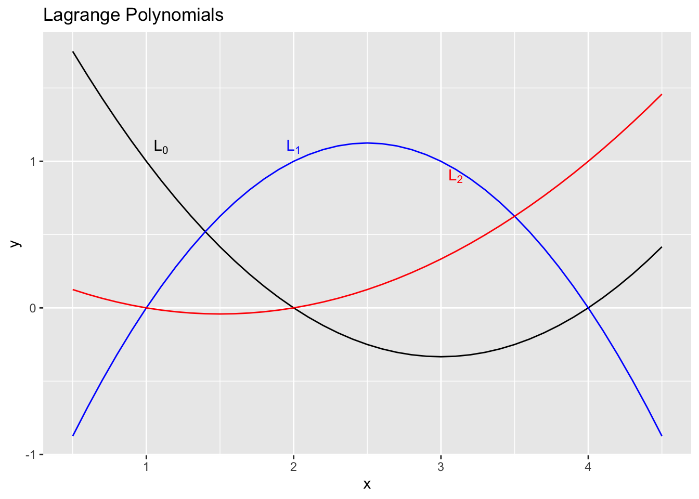
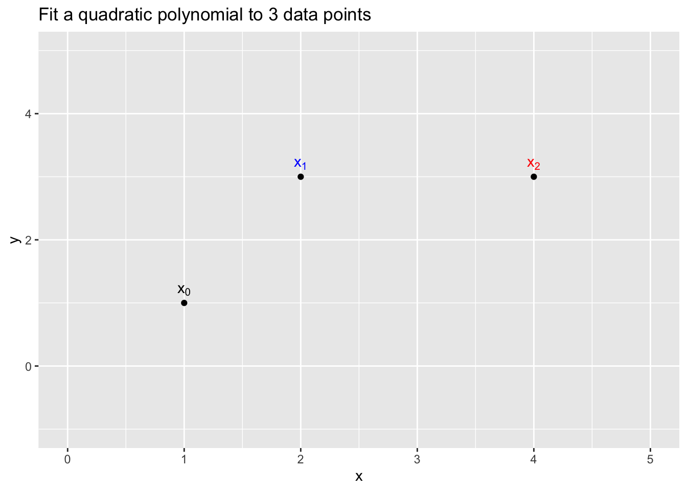
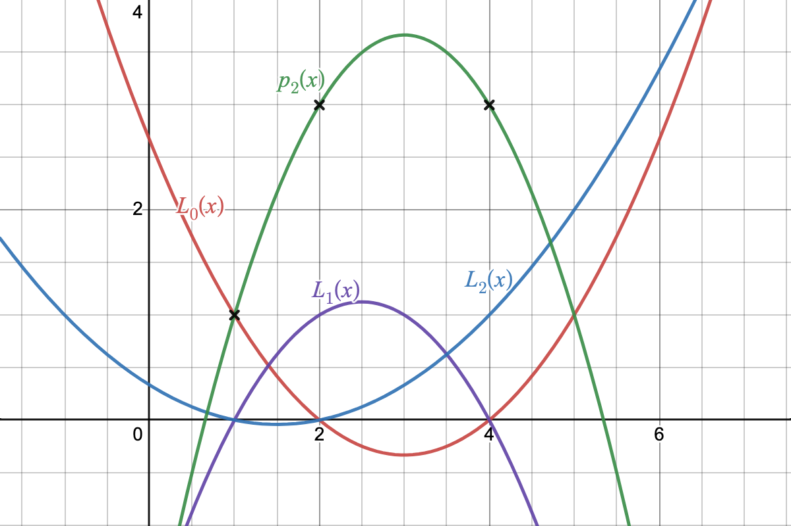

Lecture 15: October 24, 2023 Note: October 19 was taken for review of Midterm makeup quiz
15.1 Lagrange Polynomials
As a result of the advantages and disadvantages listed above, other approaches have been developed that attempt to address the disadvantages. One such approach for constructing an interpolating polynomial consists of using what are known as the Lagrange polynomials.
Proceeding as before, let’s try to construct a polynomial using the general linear form using the following equation:\[ \begin{aligned} p(x) = p_n(x) &= \sum_{j=0}^n y_j L_j(x) ,\\ &= y_0 L_0(x) + y_1 L_1(x) + y_2 L_2(x) + \cdots + y_n L_n(x), \end{aligned} \tag{15.1}\]
where \(L_j(x)\) are called Lagrange polynomials with the following properties:
\[ L_j(x_i) = \biggl\{ \begin{matrix} {0, \; i \neq j} \\ {1, \; i = j} \end{matrix} \quad j=0,1, \ldots, n. \tag{15.2}\]
Using this definition, it isn’t hard to show that
\[ p_n(x_i) = y_i, \quad i= 0,1,2, \ldots, n. \]
In other words, \(p_n(x)\) is an interpolating polynomial.
Kronecker notation
You may also see the Lagrange polynomials written in the more concise notation:
\[ L_j(x_i) = \delta_{ij} \]
where \(\delta_{ij}\) denotes the Kronecker \(\delta\) function. In simple terms, the Lagrange polynomials are equal to 1 at their corresponding node point. For example, \(L_0(x_0) = 1\) and \(L_0(x_i) = 0\) at all of the other node points not equal to \(x_0\). (see Figure 15.1).
Example 15.1 Construct \(p_2(x)\) for data points \((1,1), (2, 3), (4,3)\) using the Lagrange polynomial formulation.

Solution. The first step Is to compute the individual \(L_j(x)\) for the given data points \((1,1), (2, 3), (4,3).\)
Let’s start with the first Lagrange polynomial \(L_0(x).\) By definition (Equation 15.2), we know that the polynomial must satisfy the following conditions for \(j=0\).
\[ L_0(x_i) = \biggl\{ \begin{matrix} {0, \; i \neq 0} \\ {1, \; i = 0} \end{matrix}. \]
We also know that \(L_0\) must be a quadratic polynomial (Why? ) As a result, we know that the general form for \(L_0\) must be:
\[ L_0(x) = a\cdot(x - r_1)(x - r_2), \] where \(r_1, r_2\) are the two roots. To satisfy condition \(L_0(x) = 0\) at the two nodes other than \(x_0\), means that the two other nodes, \(x_1 = 2, x_2 = 4\) must be the two roots of the quadratic.
\[ L_0(x) = a\cdot(x-2)(x-4). \]
We can now use the remaining condition \(L_0(x_0) = 1\) to see that:
\[ \begin{aligned} L_0(x_0) = 1 &= a\cdot(x_0 - 2)(x_0 - 4), \\ &= a \cdot(1-2)(1-4) \\ &= 3a \end{aligned} \]
Therefore \(a = 1/3\) giving us the solution:
\[ L_0(x) = \frac{1}{3} (x-2)(x-4) \]
Using the same procedure, we can compute:
\[ L_1(x) = -\frac{1}{2}(x-1)(x-4). \]
and finally:
\[ L_2(x) = \frac{1}{6}(x-1)(x-2). \]
I leave the computation of these two for you to practice on.
Using (Equation 15.1), we can now combine the 3 Lagrange polynomials and multiply by the corresponding \(y_j\) values to gives us the desired interpolating polynomial :
\[ \begin{aligned} p_2(x) &= \frac{y_0}{3}(x-2)(x-4) -\frac{y_1}{2}(x-1)(x-4) \\ &+ \frac{y_2}{6}(x-1)(x-2) \end{aligned} \]
Substituting for the values of \(y\) we get:
\[ \begin{aligned} p_2(x) &= \frac{1}{3}(x-2)(x-4) -\frac{3}{2}(x-1)(x-4) \\ &+ \frac{3}{6}(x-1)(x-2) \end{aligned} \tag{15.3}\]
Figure 15.2 shows all three of the Lagrange polynomials in addition to the final interpolating polynomial \(p_2(x)\) of degree 2 for the 3 given data points.

Uniqueness (again)
One should note at this point that while the two approaches appear different, they yield the same second degree interpolating polynomial. In other words Equation 14.3 = Equation 15.3 .
Remark: It can be easily shown that there is only one quadratic interpolating polynomial for any three (distinct) points.
Proof. Suppose there were 2 polynomials \(p_2(x), q_2(x)\) that interpolate the given points. Then define
\[ r(x) = p_2(x) - q_2(x). \]
First note that \(r(x)\) is also of degree \(\leq 2\). But
\[ r(x_i) = p_2(x_i) - q_2(x_i) = y_i - y_i = 0, \quad i=0,1,2 \]
This means that \(r(x)\) has three distinct roots and has degree \(\leq 2\). That isn’t possible unless \(r(x) \equiv 0\) by the Fundamental Theorem of Algebra. Therefore \(p_2(x) = q_2(x)\).
15.2 General Form of Lagrange Polynomials
To generalize this idea to a higher number of data points, first notice that we can write the Lagrange polynomial fitting the \(n\) points as:
\[ \begin{aligned} L_j(x) &= \frac{(x - x_0)(x - x_1) \cdots {\color{blue}(x - x_{j-1})(x - x_{j+1})} \cdots (x - x_n)}{(x_j - x_0)(x_j - x_1) \cdots (x_j - x_{j-1}) (x_j - x_{j+1}) \cdots (x_j - x_n)} \\ &= \prod_{i=0}^{n} \frac{x - x_i}{x_j - x_i}. \end{aligned} \tag{15.4}\]
Note that the term in the numerator: \[ (x - x_0)(x - x_1) \cdots (x - x_{j-1}) (x - x_{j+1}) \cdots (x - x_n) = 0 \quad \forall \ x_i \neq x_j \]is missing the \(jth\) term, hence for all other node points it will be equal to \(0\). In addition, if \(x_i = x_j\), then the numerator and the denominator are equal, hence \(L_j(x)\) satisfies the conditions for a Lagrange polynomial.
Given this formulation, the construction and evaluation of the interpolating polynomials proceeds as before.
- Construction of \(L_j(x)\).
To simplify notation, we define the following terms:
\[ \begin{aligned} \rho_j &= \prod_{i\neq j}^{n} {x_j - x_i} \quad j=0,1, \ldots, n,\\ w_j &= \frac{1}{\rho_j}, \end{aligned} \tag{15.5}\] where the \(w_j\) are called the barycentric weights. ((Berrut and Trefethen 2004))
Remark: Having computed these weights that’s it for construction!
Notice also that this computation can be done in \(O(n^2)\) flops.
- Evaluation of \(p_n(x)\)
To evaluate the polynomial we just need to bring the different parts together. In order to simplify this process, first notice that if we define \[ \begin{aligned} \Psi(x) &= (x - x_0)(x - x_1) \cdots (x - x_n) \\ &= \prod_{i=0}^{n} {(x - x_i)} \end{aligned} \tag{15.6}\] then we can write the interpolating polynomial as:
\[ p_n(x) = \Psi(x) \sum_{j=0}^n \frac{w_j\cdot y_j}{(x - x_j)}. \tag{15.7}\] Here all we’ve done is notice that the numerator of Equation 15.4 is nothing more than Equation 15.6 divided by the missing term \((x - x_j)\). When we insert this into the formula for the interpolating polynomial then \(\Psi(x),\) which doesn’t depend on \(j\) can be pulled out of the summation sign. This also has the advantage that we just need to compute that term once! The rest of the evaluation can be done if \(O(n)\) flops.
Let’s do one quick example using the data given below:
| \(i = 0\) | \(i = 1\) | \(i = 2\) | \(i = 3\) | |
|---|---|---|---|---|
| \(x\) | -1.1 | 1.1 | 2.2 | 0.0 |
| \(y\) | 0.0 | 6.75 | 0.0 | 0.0 |
First we construct the barycentric weights, \(w_j = 1/\rho_j, \ j=0, 1, 2, 3\).
\(j=0\) \[ \begin{aligned} \rho_0 &= \prod_{i \neq j}^n (x_j - x_i), \qquad j=0\\ &= (x_0 - x_1)(x_0 - x_2)(x_0 -x_3) \\ &= (-1.1 - 1.1)(-1.1 - 2.2)(-1.1 - 0) \\ &= (-2.2)(-3.3)(-1.1) \\ &= - 7.986 \end{aligned} \]
Similarly for \(j=1\)
\[ \begin{aligned} \rho_1 &= \prod_{i \neq j}^n (x_j - x_i), \qquad j=1\\ &= (x_1 - x_0)(x_1 - x_2)(x_1 -x_3) \\ &= (1.1 - (-1.1))(1.1 - 2.2)(1.1 - 0) \\ &= (2.2)(-1.1)(1.1) \\ &= - 2.662 \end{aligned} \] I’ll leave the computation of the other two as an exercise.
Solution. \[ \begin{aligned} \rho_2 &= (x_2 - x_0)(x_2 - x_1)(x_2 -x_3) \qquad j=2\\ &= 7.986 \\ \rho_3 &= (x_3 - x_0)(x_3 - x_1)(x_3 -x_2) \qquad j=3\\ &= 2.662 \end{aligned} \]
Having computed the \(\rho\) values, the barycentric weights can now be easily computed.
An interesting feature of this formulation is that the construction of the interpolating polynomial does not depend on the values of \(y\) - we only need the data nodes \(x_i\).
Tip
Once we have computed the weights for a given set of \(x\) values, we can use them for any function whatsoever (as long as we know values at those nodes). This also means that since we never assumed any order of the nodes, the weights are independent of the order that the nodes are in. Based on this, it is not hard to show that Equation 15.7 can be re-written in the more elegant form of:
\[ \large {p_n(x) = \frac{\sum_{j=0}^n \frac{w_j\cdot y_j}{(x - x_j)}}{\sum_{j=0}^n \frac{w_j}{(x - x_j)}}.} \tag{15.8}\]
where the term \(\Psi(x)\) has been eliminated.
Summary
Let’s summarize the use of Lagrange basis functions as an interpolating function.
We introduced the concept of a Lagrange polynomial that can be used as a basis for an interpolating function
We also showed how to construct an interpolating polynomial using a special set of weights called barycentric weights.
The construction of this polynomial can be shown to be \(O(n^2),\) and does not depend on the values of \(y\) or \(f(x)\).
Once the construction has been completed, the interpolating polynomial can be used for any number of different functions, each evaluation costing \(O(n)\) flops.
It can also be shown that if we choose the data point properly, then the algorithm for constructing and evaluating this polynomial is stable. ((Higham 2004))
15.3 References
Barycentric Lagrange Interpolation. (Berrut and Trefethen 2004)
The numerical stability of barycentric Lagrange interpolation. (Higham 2004)
Code
today <- Sys.Date()
format(today, format="Revised: %B %d %Y")[1] "Revised: May 07 2024"